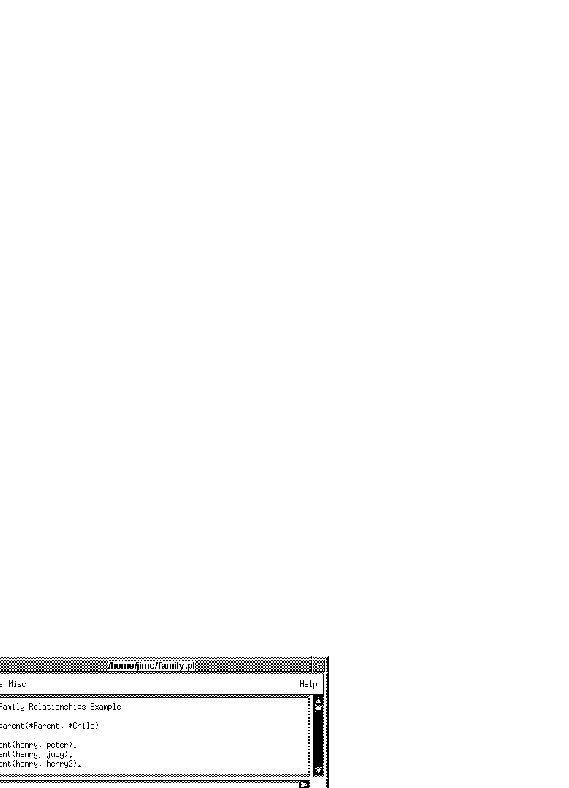

File Pulldown
Pulling down your File Pulldown menu will give you the options
listed below.
- Edit...
- Displays a file browser. The file you select
is loaded into the edit window.
- Compile
- The contents of the edit window is
saved into the file associated with the edit window if the file has changed
since loaded into the window or since last save and
that file is compiled by the Prolog system. This item is disabled when compiling file is not permitted (see qui-mai-mai-fil).
- Save
- The contents of the edit window is saved into
the file associated with the edit window.
- Save As...
- Displays a dialogue that prompts you for
the name of a file. The contents of the edit window is
saved into the file you specify.
- Insert...
- Displays a file browser. The file you
select is copied at the location of the insertion point.
- Quit
- Quits the edit window. If the edit window has
modifications that have not been saved, then it displays a
dialogue that asks you whether you want to save the
modifications.
Once you select Edit and load a file the edit window looks like this:

Edit Window with File Loaded